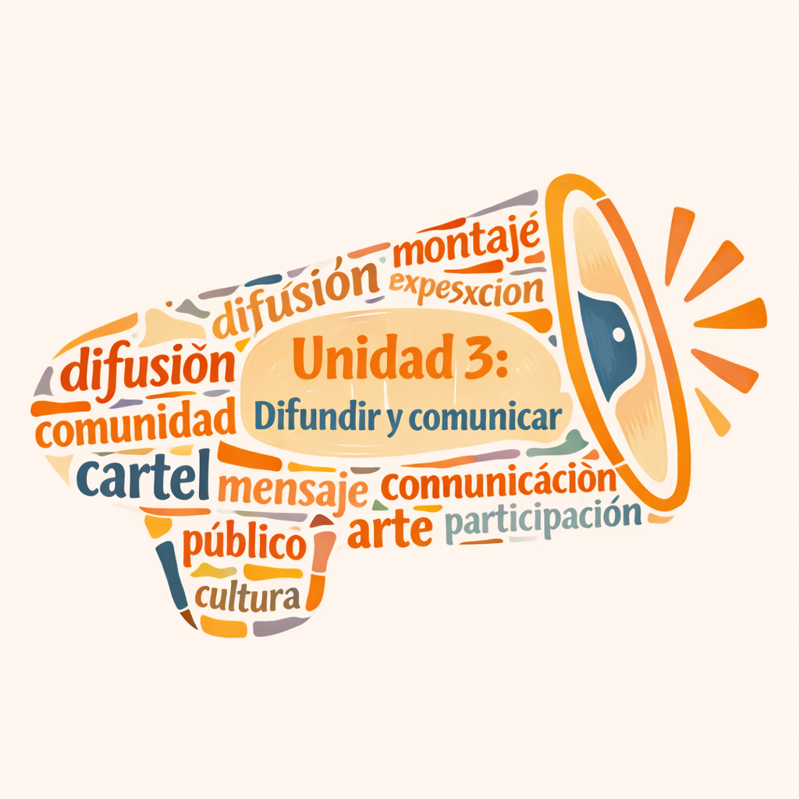
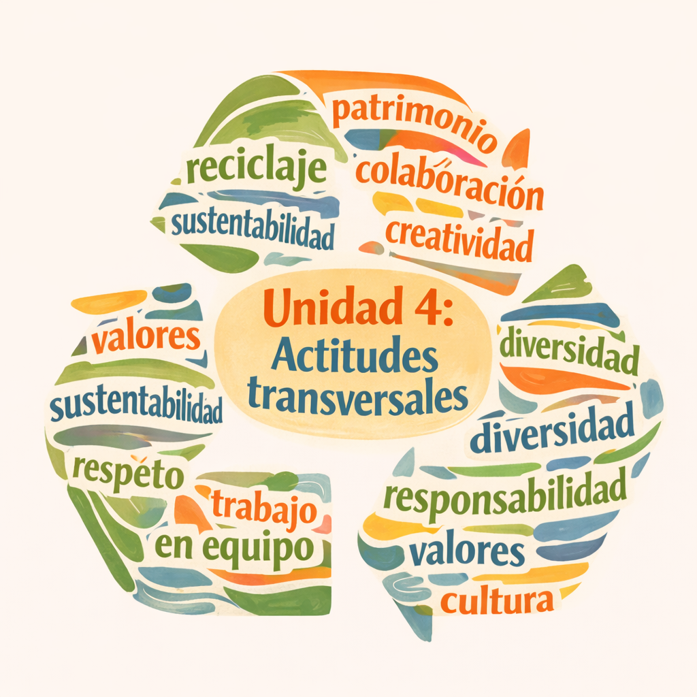

Unidad 1: Expresar y crear visualmente
Se espera que los estudiantes desarrollen proyectos visuales que expresen ideas propias, usando materiales sustentables y medios contemporáneos como el video o el diseño.
Unidad 2: Apreciar y responder frente al arte
Se espera que los estudiantes analicen obras visuales con mirada crítica, formulando juicios estéticos personales y respetuosos sobre trabajos propios y ajenos.
Unidad 3: Difundir y comunicar
Se espera que los estudiantes diseñen propuestas de difusión artística hacia su comunidad, considerando el montaje, el público y el aporte cultural.
Unidad 4: Actitudes transversales
Se espera que los estudiantes valoren la diversidad estética, el patrimonio artístico, la creatividad, el reciclaje responsable y el trabajo colaborativo.